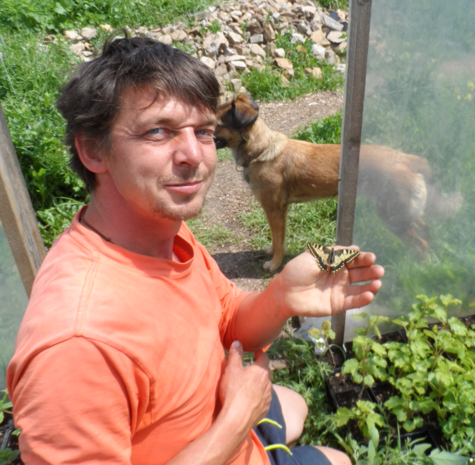

Über uns
Christian Büschleb:

Im Gärtnerhof Holzhausen ausgebildeter Staudengärtner.
Mittlerweile mit dem Zertifikat Gartenbauingenieur der Fachhochschule Erfurt ausgestattet.
Seit dem ersten Schnittlauchbrot seiner Kindheit ein leidenschaftlicher Pflanzenliebhaber durch und durch, der seinen gärtnerischen Weg konsequent lebt.
Ein viel vernetztes Wesen, Gründungsmitglied des Projektes Lebensgut Cobstädt und nun Betriebsleiter der Kräuterinsel Cobstädt.
Emmelie und Gerald Kraus:
Unsere externen Fachkräfte für Führungen und Seminare.
Aber wir wollen die Menschen hier nicht so in den Vordergrund stellen,
denn ohne die von der Natur gegebene so abwechslungsreiche Pflanzen- und Tiervielfalt
wäre die Kräuterinsel nicht dieser zauberhafte, lebenswerte Ort geworden, welcher er inzwischen ist.
So sollen auch alle kleineren Organismen, wie die Regenwürmer, Pilze, Bakterien u.s.w. hier aufgeführt werden,
da sie durch ihre geheimnissvolle Unterstützung fortwährend an der Verbesserung
unserer Bodenfruchtbarkeit arbeiten und somit nicht nur in unserer Gärmneret zu den wertvollsten Mitarbeitern gehören.
Auch die vielen Nützlinge, wie die Marienkäfer, Florfliegen, Schlupfwespen, ... müssen hier Erwähnung finden.
Sie vertilgen durch ihre kontinuierliche Arbeit lästige Schädlinge, obwohl es ja wiederum keine wirklichen Schädlinge in diesem Sinne gibt.
So müssen wir wohl auch auf die Blattläuse und pilzlichen Erreger hier eingehen,
welche uns ab und zu Hinweise darauf liefern, das bestimmte Pflanzen nicht optiaml versorgt sind oder am falschen Standort stehen
und sie daher unsere besondere Aufmerksamkeit benötigen.
Weiter sind da das Vogelgetier, wie Spatzen, Meisen, Elstern, Bachstelzen, ..., manchmal sogar ein Eisvogel oder ein Buntspecht,
welche uns treue Gesellschaft leisten.
In der Gärtnerei gibt es auch Frösche, Kröten, Eidechsen und noch vieles noch nicht aufgezähltes weiteres Getier zu entdecken.
Und ganz besonders die enorme Vielfalt an Bienen, Hummeln und Schmetterlingen, welche sich hier heimisch fühlen,
geben uns ein gutes Gefühl einen wichtigen Beitrag zum Artenerhalt zu leisten.
Und jetzt sind natürlich auch die Pflanzen an der Reihe, welche uns Tag für Tag mit mannigfaltigen Aromen, Düften, Farben und noch vielen Mehr verzaubern.
Sie geben uns durch ihre Vermehrbarkeit über Samen, Stecklinge, Ausläufer etc. unsere Existenzgrundlage. Und wir versuchen sie wertzuschätzen indem wir ihre Geschichten erzählen - über
ihre Verwendung als Nutzpflanzen, als Medizin oder als Pflanzendevas... Vielen Dank Pflanzenwelt!!!
Wir sehen uns schließlich nicht als reinen Produktionsbetrieb mit Endverkauf an, welcher ausschließlich auf Gewinnmaximierung ausgerichtet ist. Wir wollen vielmehr eine Plattform schaffen, um diese bewundernswerte, vielfältige Pflanzenwelt den Menschen näher zu bringen und sie somit nicht in Vergessenheit geraten zu lassen.
Zu guter Letzt danken wir hiermit auch allen Kunden, Wegbegleitern und Wegbereitern, Freunden und meiner Familie, dass sie uns auf diesem Weg unterstüzen.
Ohne euch wäre die Kräuterinsel nicht möglich!!! Ihr seid die Kräuterinsel!!!
Euer Kräutergärtner
Christian Büschleb